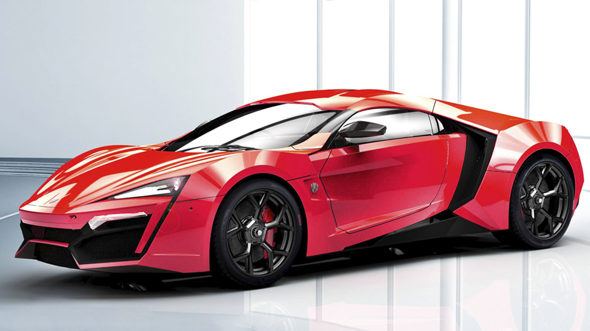
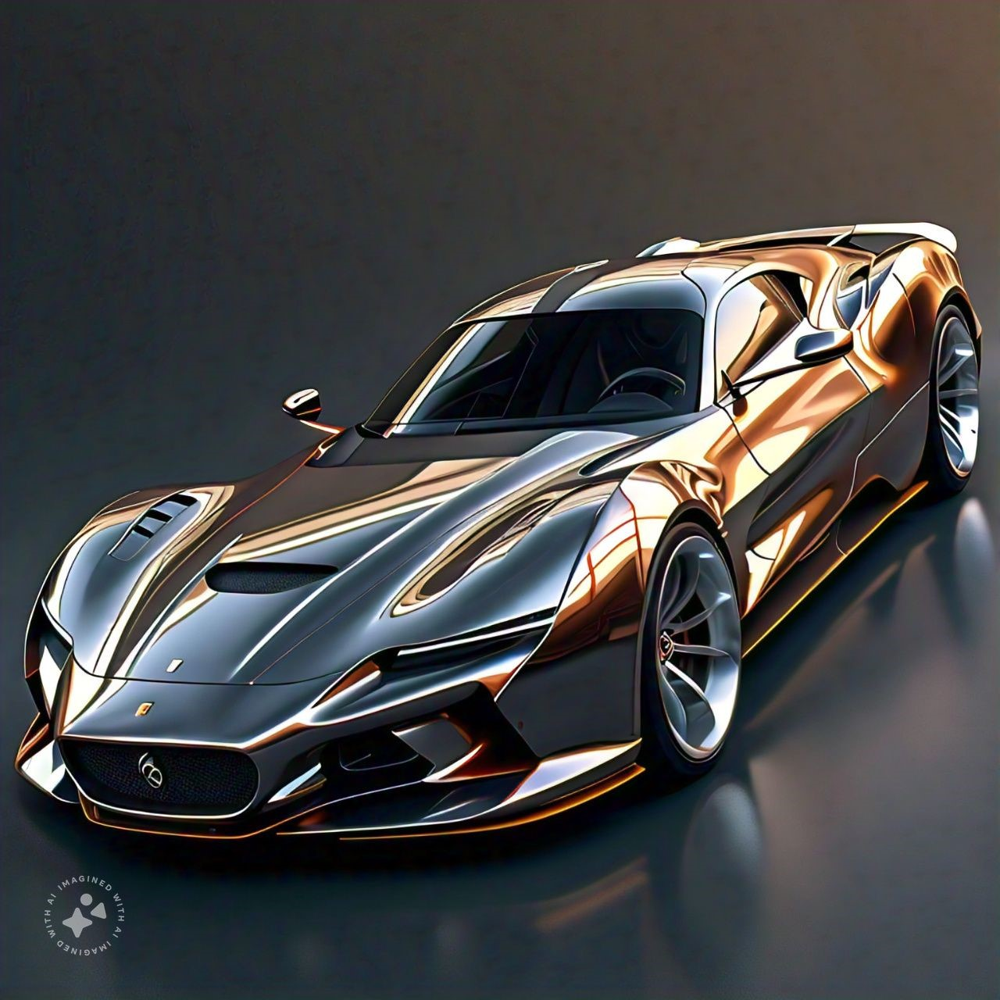

CALL GT:
CALL GT Rojo de Alta Velocidad
Este impresionante automóvil deportivo rojo es un verdadero ícono de la velocidad y la elegancia. Detalles clave:
Diseño aerodinámico: Sus líneas afiladas y su forma elegante sugieren que está diseñado para cortar el viento a altas velocidades.
Motor potente: Bajo el capó, encontrarás un motor de alto rendimiento que puede acelerar de 0 a 100 km/h en cuestión de segundos.
Interior lujoso: El habitáculo está revestido en cuero de primera calidad, con asientos deportivos que te abrazan en las curvas más cerradas.
Marca icónica: El emblema del auto confirma que estamos hablando de un CALL GT.
PRECIO: $350,000

PAIN YT:
PAIN YT Metálico
Este impresionante automóvil deportivo combina lujo, velocidad y diseño vanguardista. Detalles clave:
Diseño aerodinámico: Sus líneas fluidas y curvas elegantes sugieren una eficiencia aerodinámica excepcional.
Marca exclusiva: El emblema en la parrilla frontal es distintivo de un PAIN YT, un fabricante elegantes de autos de alto rendimiento.
Motor de alto octanaje: Bajo el capó, late un motor potente que puede acelerar de 0 a 100 km/h en cuestión de segundos.
Interior lujoso: Los asientos de cuero, la tecnología avanzada y los detalles meticulosos hacen que conducir este auto sea una experiencia única.
PRECIO: $2,500,000